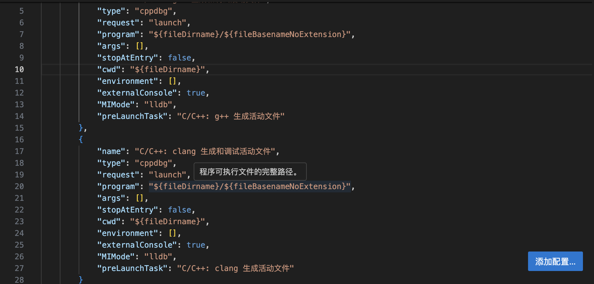

C++_Debug_Record¶
本片文章重点不是C++基础知识，而是关于各个知识块可能出现的问题。 本片blog是对各种可能出现的问题进行了整理收录。
关于编译器¶
vscode¶
编译器报错
Unable to perform this action because the process is running.
- Solution: 具体参考，点击此处 
注意，上下有两个externalConsole需要修改！
输入/输出流¶
该词条下重点讨论cin/cout,scanf/printf
scanf¶
//1. 什么可以包含在“”里面
printf("Write a number: ");
scanf("%d", &x);
printf("Write a character: ");
scanf(" %c", &y);
//instead of this below:
scanf("x = %d\ny = %d",&x,&y);
Function¶
swap函数¶
下面直接给出swap函数的使用案例
void swap_1(int *x,int *y);
void swap_2(int &x,int &y);
int main()
{
int a = 1,b = 2;int *p = &a;int *q = &b;
swap_1(p,q);cout<<a<<" "<<b<<endl;
swap_2(a,b);cout<<a<<" "<<b<<endl;
return 0;
}
void swap_1(int *x,int *y)
{
int t;
t = *x;
*x = *y;
*y = t;//理解p、q指针指向的内存空间的数据被交换了
}
void swap_2(int &x,int &y)
{
int temps;
temps = x;
x = y;
y = temps;//int a; int &ra=a;定义引用ra,它是变量a的引用，即别名；原理差不多
}
指针使用¶
指针与数组¶
提示
这里以二维数组为例子，我们知道数组名就是类似指针。
//PART 1 理解数组名
int b[3][2] = {{0,1},{2,3,},{4,5}};
int (*a) [2] = b;//注意这里没有取地址&
//int ** a = &b;//错误，类型不匹配，二维数组的名称的类型是int (*)[2];
int (*q) [2] = &b[0];
cout<<a<<" "<<q;
cout<<endl<<b[0]<<" "<<b[1]<<endl;
int *m = b[0];
cout<<m<<" "<<b+1;//这一点证明二维数组b[0]是一个指针；并且他的数据类型是int（*）并且：b == &b[0];*(b[0]) == b[0][0];
拓展
如果我们无法确定一个指针的类型，我们该如何打印这个指针？
int b[3][2] = {{0,1},{2,3,},{4,5}};
cout<<(void*)b[0]<<endl;//使用强制类型转换（void*）
//PART 2 理解下标
int A[3][4] = {1,2,3,4,5,6,7,8,9,10};
int (*pa)[4] = A;
cout<<*pa[1]<<endl;
cout<<(*pa)[1]<<endl;
cout<<*(pa+1)[1]<<endl;//重点关注这个：笔者认为下标的意义在于告诉机器指向地址的指针的偏移量
//结果是：5 2 9；
结论
- 二维数组名是int（）[]类型，b[0]本身是int（）类型
- 下标 = 地址偏移量 = 起首地址 + 数字* 单位（即是int[num]或者是int为单位移动）
指针与函数¶
一般来说，指针与函数之间的关系有三种： [1] 指针作为参数传递
- 注意，二维数组名/指针作为实参传递时，注意参数的数据类型的写法：int ** 或者 int (*)[];
[2] 函数指针：指向函数的指针
Note
将函数指针作为参数（本质：调用函数在不同的场景需要不同的函数指针作为参数）
void print(int*);
void opp(int*);
void down(int *);
typedef void (*print_mode)(int*);
for_each(int a,int b,print_mode p)
int main()
{
for_each(a,b,print);
for_each(a,b,opp);
for_each(a,b,down);
}
[3] 指针函数：返回值为指针的函数
指针与常量¶
这一部分最重要的是指针常量和常量指针的具体应用，而不是概念 而他们的主要用途是：保护某些数据不要被修改。
int a = 10;
int * const p = &a;//指针常量，意味着指针的地址不能被修改。
//p = &b error!
int const *p = &a;//常量指针，意味着指针地址指向的值不能被修改。
//*p = 100 error！
int const *const p = &a //常量指针常量，意味着两者都不能修改。